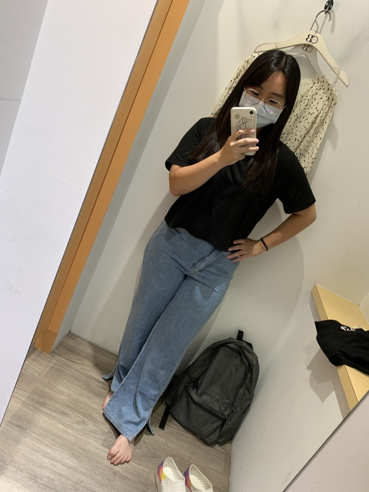
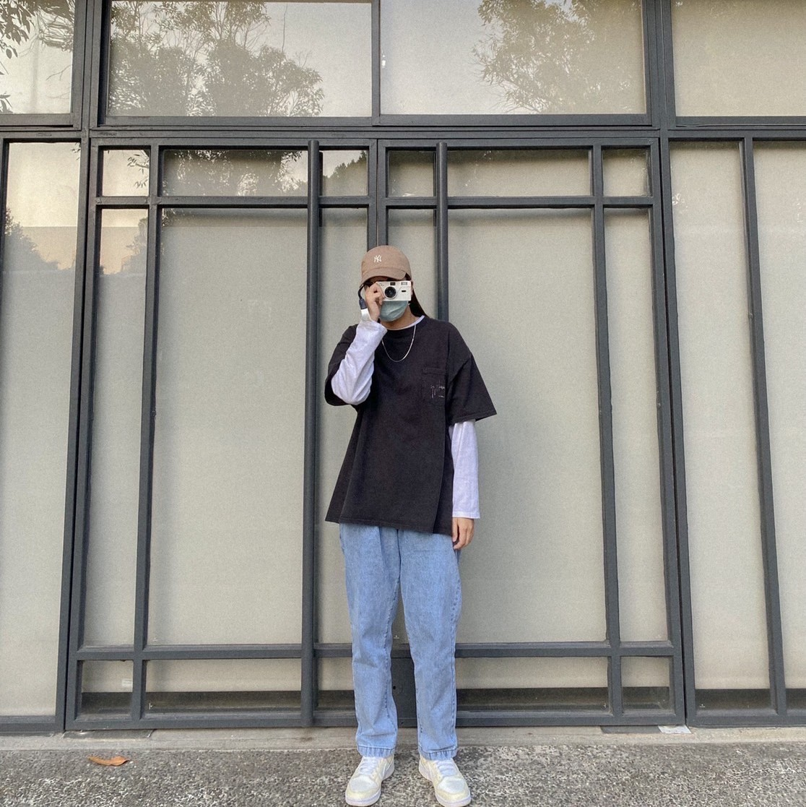
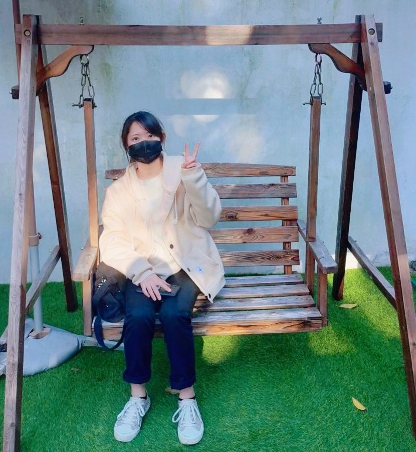
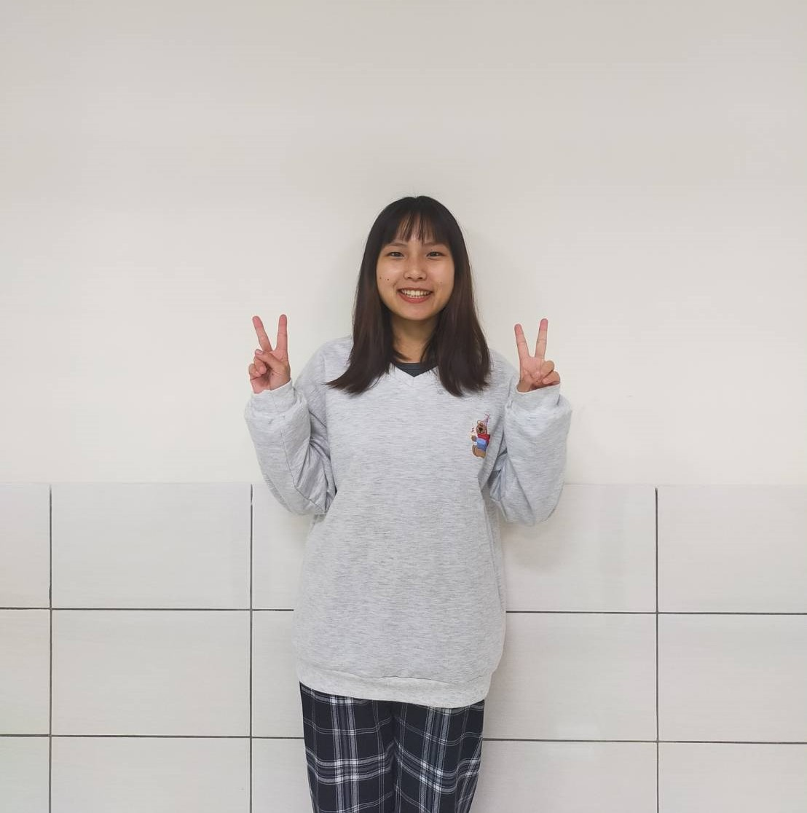

曾雯琪-前端

經過一個學期的多媒體程式設計的課程，我們學到了關於網頁前端的製作，每
次做完作業，或是這次的期末專案，都讓我覺得需要學習的地方還很多，自己
還有很多不足需要加強的地方。我發現我自己對於從無到有的生成還不是很上
手，我必較擅長說一步做一步，當一個空白要增加成為一個完整的東西，我常
常會跟網頁一樣腦袋空白一片，也讓我意識到我的不足，我的資料庫還不夠完
整，希望下學期的我能克服這個關卡。整合網頁的時候，常常會有跑版的問
題，還有不同電腦螢幕開起來，有的會跑版的不會，就讓我們覺得很困擾，不
知道應不應該改，還好後來都有解決，一學期好快就過去了，覺得做前端真的
不容易，自己還有很多不足的地方，繼續加油~
李佳蓁-前端
在做這項專案時真的蠻辛苦的，排版、配色和主題都來來回回討論了好幾次。
而跑版是我們在實作過程中遇到最大的問題，但後來將螢幕大小設定成100%去
進行調整，問題就減少蠻多了。除此之外，在整合前後端時也因為甲乙兩班不
太了解雙方的內容遇到了一些困難，幸好最後都順利解決了。雖然在做這項專
案時常常會感到很累，但完成時真的會很有成就感，也謝謝我的組員們都盡心
盡力的付出。
李芝穎-前端

經過這學期的課程，個人比起Html更喜歡CSS，雖然CSS學起來也很困難，很
多跑版的問題都是發生在CSS上面，但是當解決問題了以後就會有很大的成就
感，遇到的問題其實很多，內容無法顯示，跑版，整體看起來很雜亂，配色問
題，等等的，網路上有很多資料，最有趣的方法是和同學慢慢研究，不敢說自
己有融會貫通，但比起大一的課程確實有比較認真學習，當然也遇到很多的挫
折，常常做到一半就放棄，但是總體來說自己也蠻享受這個課程，希望下學期
的後端也可以認真的學習，找到做網頁的熱忱。
賴冠臻-後端

製作網站的過程非常具有挑戰，因為要清楚知道每個檔案和資料庫的連結
，讓整個網站更有邏輯和完整。我覺得製作的過程分工很重要，因為要每
個部分的份量不一樣卻又互相有關連，透過溝通才能更順利完成。大家遇
到困難一起討論是一件很有趣的事，最終成品出來的感覺很開心。
周佳穎-後端

這次的專案我學習到很多，從一開始構想資料庫，到登入控制、留言板、隱碼
攻擊，課程的節奏一步步帶領我們學習寫一個完整的網頁。在寫後端的過程
中，我們需要和前端做有效的溝通，才能呈現想要的樣子。過程中培養我對商
業和網站的邏輯，因此需要清楚的訂立網站的購物流程，才能使顧客的購物體
驗佳。看到我們的專案從分散的功能組合成一個完整的購物網站，覺得很踏實
且很有成就感。希望下學期做前端時可以藉這次的經驗進行的更順利!
孫珮珊-後端

這次的專案剛開始做時覺得很抽象，要把課程學到的知識融會貫通是很大
的挑戰。登入控制是我們花費最多時間做的功能，在一開始我們試著用程
式改寫發現網頁沒有變，於是詢問了助教才發現沒有寫action指定接收的
程式。在寫後端的時候，我們有明確的目標，知道成品要呈現什麼樣的功
能，故遇到不會的地方時就去努力找答案，透過「做中學」的方式，使我
更能夠了解網頁後端程式設計的實際情況。